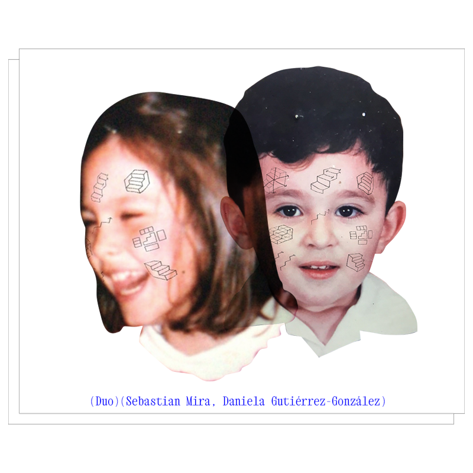
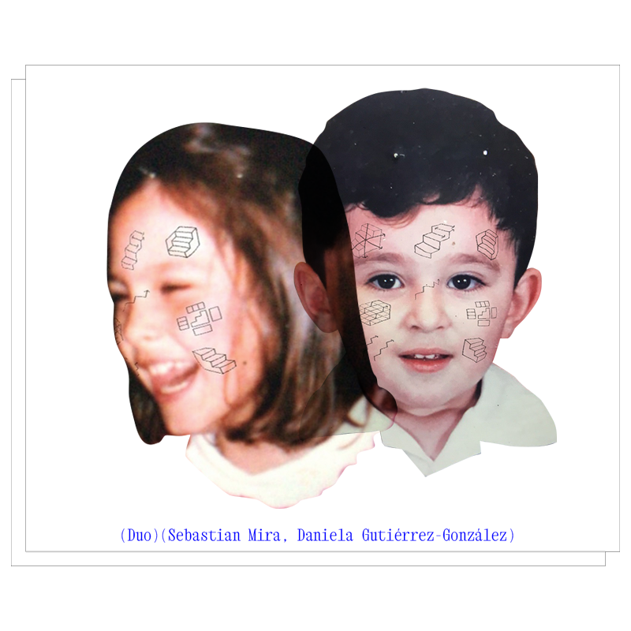
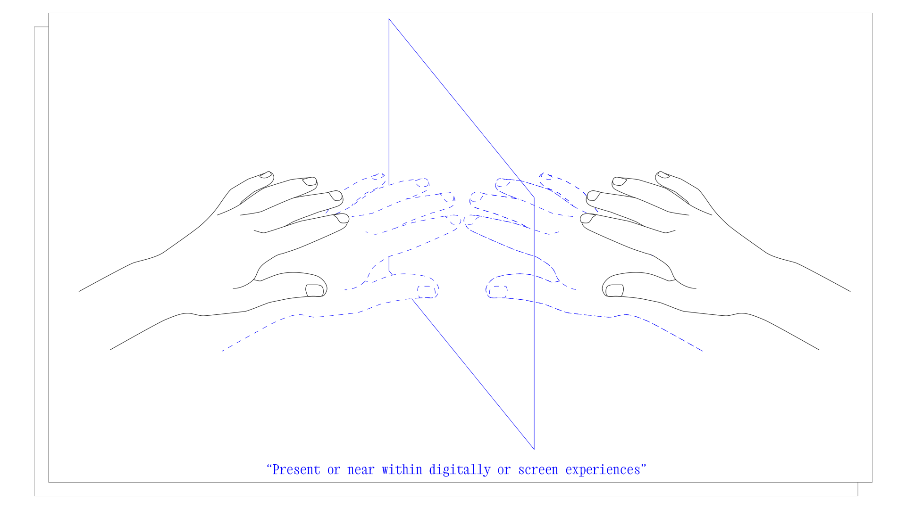
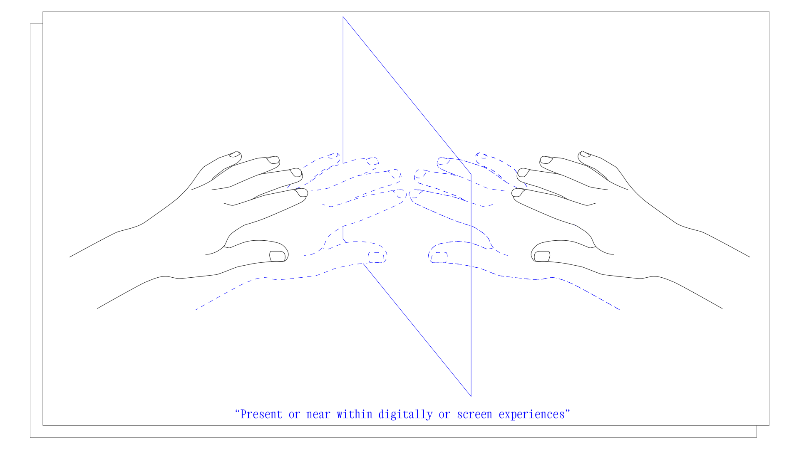
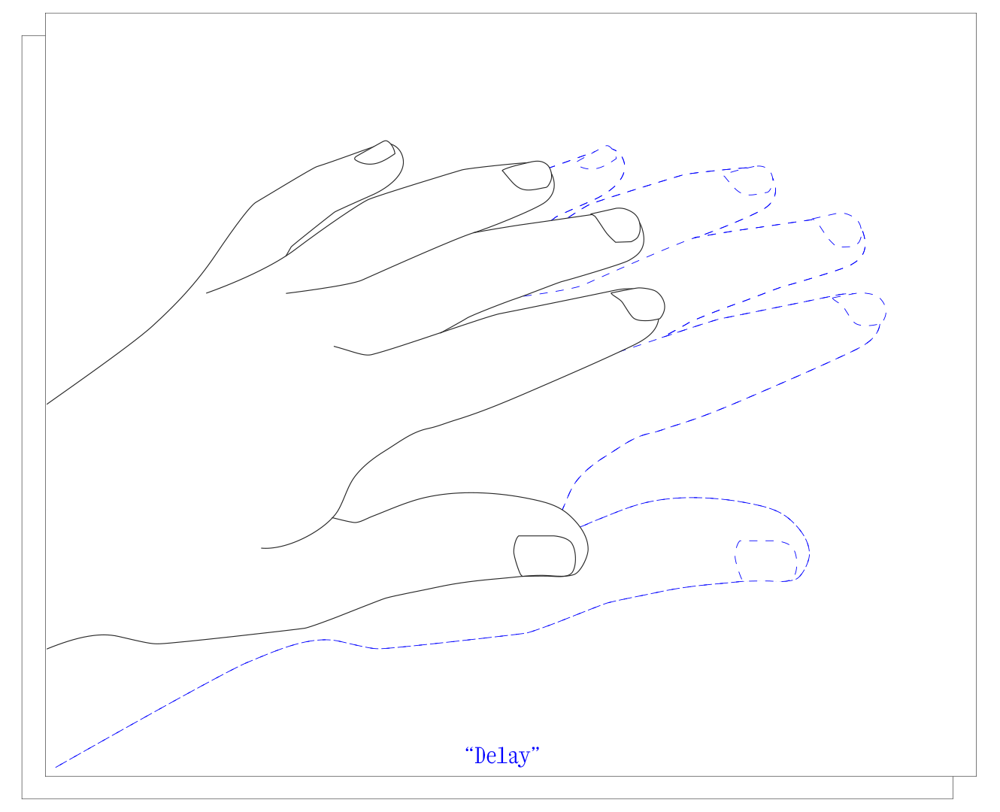
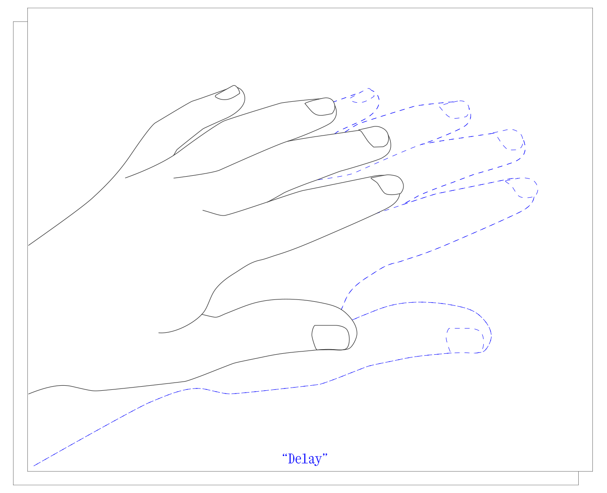

Esta plataforma digital/proyecto de exposición/intercambio de amistad/grupo de lectura es:
querer sentirse cerca,
honrar los vínculos,
reconocer las complicidades,
acotar al otro,
actuar desde los sentimientos,
resistir desde la colaboración,
articular redes,
sentir al otro(s) y especular,
hablar con los fantasmas,
interpelar a los ausentes,
reconocer los retrasos,
hablar desde el cuerpo,
la aclimatación de un cuerpo a un nuevo contexto,
un minúsculo acto de resistencia,
un proceso de adición,
una negociación de distancia y proximidad,
un espacio de reflexión sobre el tacto/la falta de tacto/la imposibilidad del tacto,
un ejercicio de telepatía/cercanía/presencia/presentness entre dos (ahora cuatro) personas alejadas
entre sí.
MSD es un dúo curatorial -01.svg)  (Sebastián Mira, Daniela Gutiérrez-González) cuyos intereses orbitan alrededor del reino virtual y el espacio físico en términos de instalación y escultura dentro de las prácticas artísticas contemporáneas. Los procesos que presentamos como equipo indagan sobre la cualidad de estar presente o cerca dentro de la digitalidad o las experiencias en pantalla
 (Sebastián Mira, Daniela Gutiérrez-González) cuyos intereses orbitan alrededor del reino virtual y el espacio físico en términos de instalación y escultura dentro de las prácticas artísticas contemporáneas. Los procesos que presentamos como equipo indagan sobre la cualidad de estar presente o cerca dentro de la digitalidad o las experiencias en pantalla -01.svg)  ; buscamos abordar las posibles definiciones y aplicaciones de vivir un momento en la distancia o en delay
 ; buscamos abordar las posibles definiciones y aplicaciones de vivir un momento en la distancia o en delay -01.svg) .
.
Pero, además de este interés por las prácticas de pantalla y sus traducciones IRL/URL, desde un interés compartido por la presencia y la distancia -01.svg)
 , MSD mantiene una metodología afectiva
, MSD mantiene una metodología afectiva -01.svg)
 que se traduce en una eterna conversación y, en un aprendizaje continuo. Entendemos claramente que la conversación
que se traduce en una eterna conversación y, en un aprendizaje continuo. Entendemos claramente que la conversación-01.svg) es una forma redimible y vital de ejercer la práctica política, artística y curatorial. Mantenerse cerca, encontrar excusas y ejercicios para apoyar nuestro proyecto es un gesto de rechazo. Es un minúsculo acto de resistencia
es una forma redimible y vital de ejercer la práctica política, artística y curatorial. Mantenerse cerca, encontrar excusas y ejercicios para apoyar nuestro proyecto es un gesto de rechazo. Es un minúsculo acto de resistencia-01.svg) , el que tenemos a nuestra disposición, en estas circunstancias (distancia, ausencia, añoranza, crisis, tristeza, preocupación).
, el que tenemos a nuestra disposición, en estas circunstancias (distancia, ausencia, añoranza, crisis, tristeza, preocupación).
apostrophhheee.xyz pretende destacar la importancia de la presencia, el tacto, la amistad y la háptica, la afectividad, los vínculos-01.svg) , y el compromiso con las personas con las que trabajamos. Intentamos construir proyectos curatoriales o comunitarios que permitan la confrontación y las afectividades, conversaciones o modelos críticos de entendimiento y convivencia que construyan relaciones solidarias fuera de las instituciones (artísticas, académicas o gubernamentales).
, y el compromiso con las personas con las que trabajamos. Intentamos construir proyectos curatoriales o comunitarios que permitan la confrontación y las afectividades, conversaciones o modelos críticos de entendimiento y convivencia que construyan relaciones solidarias fuera de las instituciones (artísticas, académicas o gubernamentales).
También es un espacio para la reflexión en torno al tacto, ó a la falta de tacto -01.svg)
 , ó a la imposibilidad del tacto, y a cómo podemos enfrentarlo a través de pequeños actos de resistencia que pasan inevitablemente por la interconectividad de la red. Nos interesa este simulacro virtual de cercanía, cuidado y comodidad. Y a partir de este momento de reflexión sobre lo háptico (o la hapticality) y la amistad política, repensar y resignificar la práctica curatorial y su relación con una plataforma web. apostrophhheee.xyz propone un enfoque curatorial afectivo, encarnado e involucrado. Haciendo de esta propuesta una excusa para desdibujar (aún más) las líneas jerárquicas y obsoletas entre curadores, artistas y agentes culturales.
, ó a la imposibilidad del tacto, y a cómo podemos enfrentarlo a través de pequeños actos de resistencia que pasan inevitablemente por la interconectividad de la red. Nos interesa este simulacro virtual de cercanía, cuidado y comodidad. Y a partir de este momento de reflexión sobre lo háptico (o la hapticality) y la amistad política, repensar y resignificar la práctica curatorial y su relación con una plataforma web. apostrophhheee.xyz propone un enfoque curatorial afectivo, encarnado e involucrado. Haciendo de esta propuesta una excusa para desdibujar (aún más) las líneas jerárquicas y obsoletas entre curadores, artistas y agentes culturales.
Tras la comunicación silenciosa e intermitente que se estableció entre Sebastián y Daniela con el gesto de las manos -01.svg) (que tocan cosas, que revelan contextos, que denuncian la falta de cercanía, que enuncian la voluntad de al menos sentirse cerca) y el inicio de la construcción de esta plataforma, ahora el reto es entender de qué manera otras voces comienzan a sumarse al proyecto, a la conversación. ¿Cómo pasamos del intercambio de dos personas, que han ido construyendo un unísono a lo largo de los años, a la conversación con Luis y Jimena? ¿Enunciamos o no esta brecha? ¿Cuáles son los detonantes para añadir nuevos interlocutores? ¿Qué empiezan a añadir los demás a este formato ya existente?
(que tocan cosas, que revelan contextos, que denuncian la falta de cercanía, que enuncian la voluntad de al menos sentirse cerca) y el inicio de la construcción de esta plataforma, ahora el reto es entender de qué manera otras voces comienzan a sumarse al proyecto, a la conversación. ¿Cómo pasamos del intercambio de dos personas, que han ido construyendo un unísono a lo largo de los años, a la conversación con Luis y Jimena? ¿Enunciamos o no esta brecha? ¿Cuáles son los detonantes para añadir nuevos interlocutores? ¿Qué empiezan a añadir los demás a este formato ya existente?
Luis y Jimena empezaron por leernos, por detallarnos, y ahora suman, desde sus prácticas, nuevas aristas al proyecto, nuevas miradas. Jimena Madero, desde el diseño de comunicación y la traducción de algunas de nuestras inquietudes conceptuales a símbolos y a una identidad visual; Luis Sanabria, desde postular como pieza la propia conversación entre nosotros y, con un quinto interlocutor mutable que es la ausencia, o la distancia, o el fantasma, o la imposibilidad.
A estos dos nuevos aportes, añadimos la acción de leer juntos-01.svg) , de leernos juntos, de leer lo que el otro ya ha leído, de formar una bibliografía intuitiva y conjunta, a la que se irán añadiendo textos. Para revelar, también, a través del gesto de la marca, del rasguño, del subrayado, la multiplicidad de los otros
, de leernos juntos, de leer lo que el otro ya ha leído, de formar una bibliografía intuitiva y conjunta, a la que se irán añadiendo textos. Para revelar, también, a través del gesto de la marca, del rasguño, del subrayado, la multiplicidad de los otros-01.svg) que forman parte de este proyecto de cercanía y apoyo.
que forman parte de este proyecto de cercanía y apoyo.